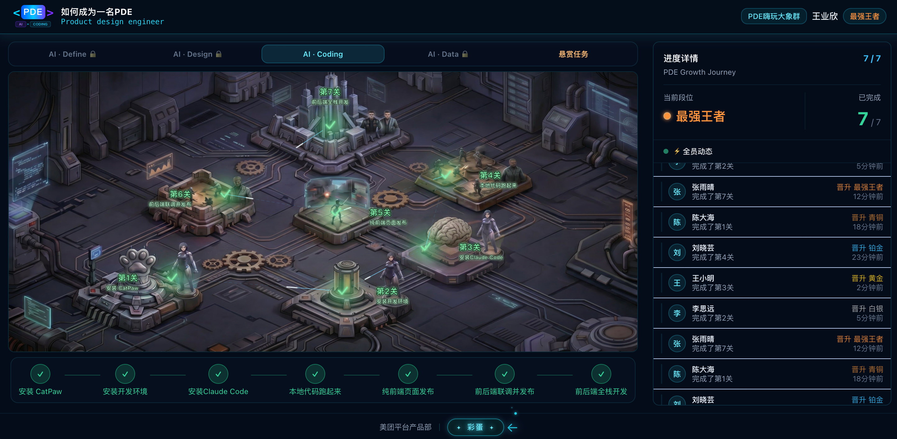
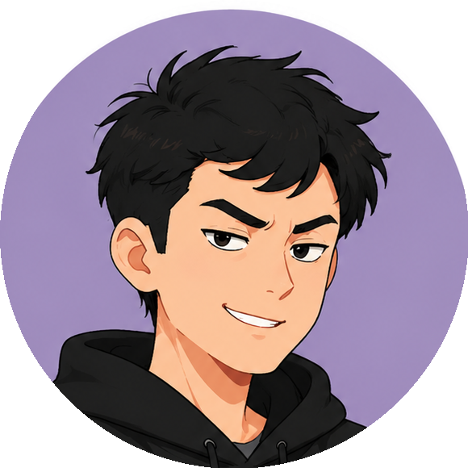
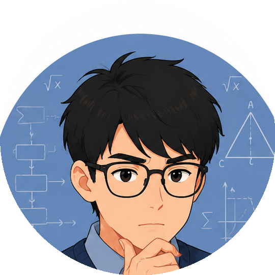
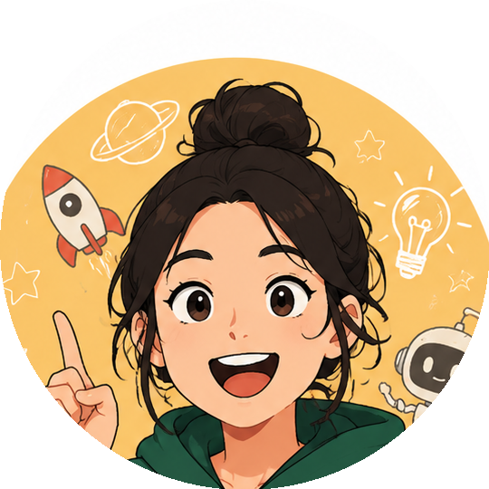

2025 年初，Vibe Coding 刚开始流行，我就入坑了。写小程序、做业务看板，很快尝到了甜头，越做越想做，整个过程顺滑得像在和一个很懂事的助手对话。
但顺滑是有边界的。随着我想做的东西越来越复杂，涉及前后端交互、或者功能逻辑稍微绕一点，那种顺滑开始变得粗糙。报错越来越多，调试越来越久。我意识到，我可能触碰到了 Vibe Coding 的边界：它能帮你快速起步，但它不是为复杂系统设计的。
几天后看到 Karpathy 的演讲：From Vibe Coding to Agentic Engineering，我决定往前走一步，尝试 AI Coding Agents。这类工具，比如 Claude Code，能在代码库里持续工作、跨文件理解上下文、处理真实的工程复杂度。恰好这时候，美团平台有一个 PDE 闯关挑战赛，用的正是 CatPaw 和 Claude Code。这是一个很好的机会，我想借它实践一下：做一个真实的全栈应用。
知道终点在哪，知道走偏了，知道够不够好。
而围绕这三件事，我踩了不少坑。
PDE（Product Design Engineer）闯关是一个鼓励习得全栈开发能力的项目。闯关平台做成了游戏地图的样子，七个关卡依次解锁，从环境安装、前后端联调到最终部署上线。整个过程有点像打游戏，但写的每一行代码，都是真实跑起来的。

→ 点击体验线上版本

闯关项目是一个跑步地图应用：用户打开，能看到今天的天气适不适合跑步，能搜索附近的公园和绿道，能记录自己跑过的路线。听起来不复杂，但对一个没有接触过全栈开发的人来说，这个过程是全新的。这个过程里，我遇到了一个没有预想到的困境。
在跟 Agent 对话时，每一步都会让我来确认，这种节奏很容易让人产生一种安全感，每一步我都看过了，应该没问题。但走到中段才发现理解有偏差。
我意识到，在复杂系统里，局部正确不等于整体正确，每一步看起来合理，但方向本身可能从一开始就有偏差，只是在足够多的层叠之后才会暴露出来，于是有了下面的三条教训：
在整个协作过程中，你一直在跟 AI 对话。沟通本身就是工作的一部分，越做越觉得，AI 就是一面镜子，它的输出会精准映照你的输入。这里有两个 Prompt 技巧，是我在实践中最受用的。
通过这次经历，我也更清楚地感受到了 Vibe Coding 和 AI Coding Agents 之间的边界，他们有属于各自适配的场景。
| 判断维度 | Vibe Coding | AI Coding Agents |
|---|---|---|
| 代表工具 | Nocode | Claude Code、Codex |
| 数据依赖 | 简单读写 | 多表关联 / 实时同步 |
| 交互复杂度 | 低（如看板展示） | 高（如涉及状态机） |
| 迭代频率 | 低 | 高 |
| 产品形态 | 短期 | 长期维护 |
这次闯关让我用游戏化的方式真正摸到了开发的边界，也在 AI 协作上积累了一些新的直觉。于是我主动参与到 PDE 项目的共建中，负责"项目广场"模块的开发，一个让更多同学能看到彼此作品的地方。这次不再是跟着关卡走，而是自己定义需求、自己和 AI 协商路径。项目广场的初衷，是希望它成为一个入口，让更多人有机会加入进来。
如果要总结这段经历：知道终点在哪，知道走偏了，知道够不够好。这三件事，AI 做不到，但你可以。
在这个项目之后，我雇佣了三个 AI 同事作为我的日常搭子，跟我讨论新项目的点子，互相挑战打磨想法。



这只是开始。每一次对话都是一次新的实验，每一个想法都值得被认真挑战。我想继续做下去。